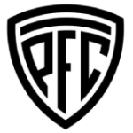
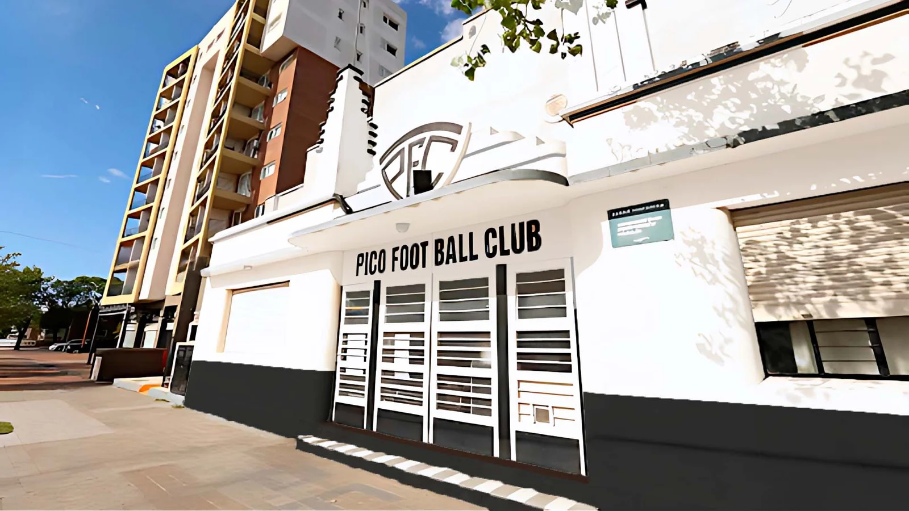
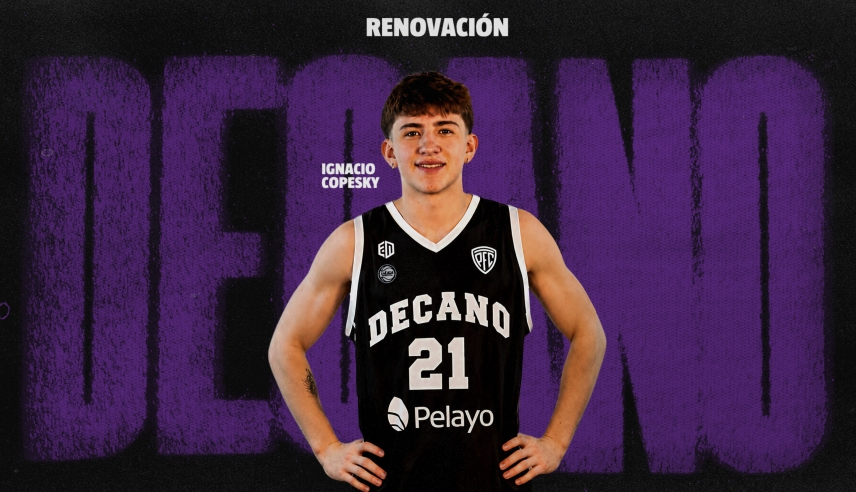
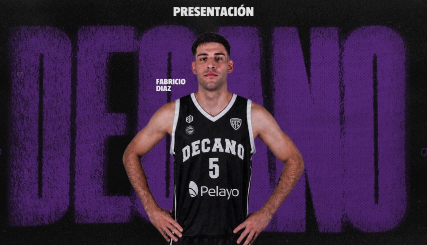

El 1 de abril de 1919, un grupo de jóvenes entusiastas del deporte y con un fuerte sentido de comunidad fundó Pico Football Club en la ciudad de General Pico, La Pampa. La institución nació con el propósito de fomentar la práctica del fútbol y generar un espacio de encuentro y crecimiento para la comunidad. Entre sus impulsores se destacaron Mario Rudoni, Eduardo Rolero, Gabriel Pedrerol y otros visionarios que sentaron las bases de lo que con el tiempo se convertiría en una institución emblema de la región.
Desde sus primeros años, Pico F.C. se consolidó como un referente deportivo en la zona. Su crecimiento fue paralelo al desarrollo de General Pico, acompañando la evolución de la ciudad y fortaleciendo el sentido de pertenencia de sus habitantes. El club se convirtió en un espacio de reunión donde el deporte no solo era una actividad recreativa, sino también un medio para fortalecer valores como el esfuerzo, la disciplina y el trabajo en equipo.

El escolta U21 continuará en el Decano para la temporada 2026/27 de la Liga Argentina. Llegó en enero y disputó 15 partidos en la pasada campaña, con promedios de 2,5 puntos y 1,7 rebotes. El equipo de Juan Varas está confirmado.

El interno de 20 años y 2,03 metros se convirtió en nuevo jugador del Decano para la próxima edición de La Liga Argentina. Llega proveniente de Fusión Riojana.
Tanto el torneo Extra de divisiones inferiores, como la Copa Liga Pampeana de Fútbol, conocerán a sus campeones el fin de semana del sábado 16 y domingo 17 de diciembre.
| Pos | Club | PT | PJ | PG | PE | PP | DF |
|---|---|---|---|---|---|---|---|
| 2 |  Club Sportivo Independiente Club Sportivo Independiente |
37 | 22 | 10 | 7 | 5 | 10 |
| 5 |  Pico Football Club Pico Football Club |
32 | 22 | 9 | 5 | 8 | 0 |
| 7 |  Club Atlético Costa Brava Club Atlético Costa Brava |
27 | 22 | 7 | 6 | 9 | 2 |
| 8 |  Ferro Carril Oeste Ferro Carril Oeste |
27 | 22 | 6 | 9 | 7 | -5 |
| 10 |  Club Social y Atlético Ferro Carril Oeste Club Social y Atlético Ferro Carril Oeste |
24 | 22 | 6 | 6 | 10 | -4 |
| 11 |  Club Atlético Ferro Carril Oeste Club Atlético Ferro Carril Oeste |
20 | 22 | 4 | 8 | 10 | -15 |